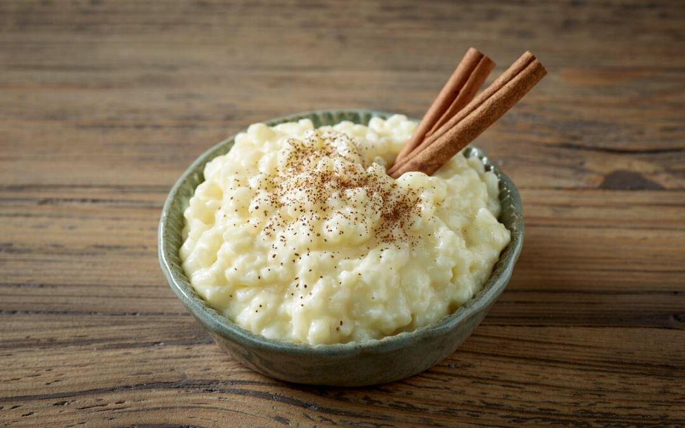

Arroz con leche

Description
TThis easy recipe will teach you how to make arroz con leche (Mexican rice pudding) with simple step-by step
directions and photos.
Ingredients
- 2 cups water
- 2 (3-inch long) cinnamon sticks
- 1 cup uncooked white rice
- 1 cup whole milk
- 1 (12-ounce can) evaporated milk
- 14 ounces sweetened condensed milk
- 1 teaspoon cinnamon for garnish
Steps
- Gather all ingredients.
- Combine water and cinnamon sticks in a medium saucepan over high heat.
- Bring to a boil. Reduce heat, cover, and simmer until cinnamon releases its color and flavor, about 5
minutes.
- Add rice and bring to a boil. Reduce heat, cover, and simmer until rice is tender and water is absorbed,
about 20 minutes.
- Stir in whole milk, evaporated milk, and sweetened condensed milk. Cook uncovered over medium heat until
mixture has thickened to desired consistency, 15 to 20 minutes.
- Serve warm or cold. Sprinkle each portion with ground cinnamon.
See original recipe at:
allrecipes.com
Homepage